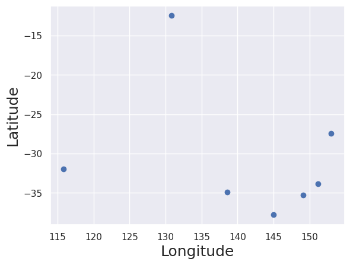
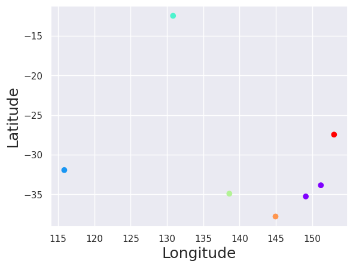
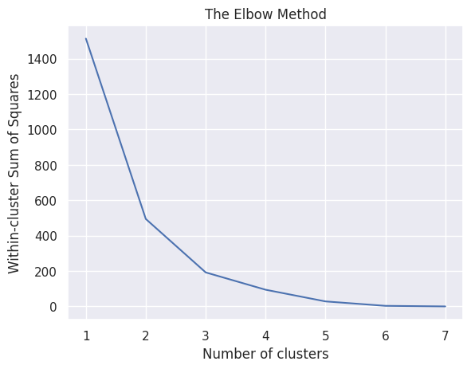

K-means clustering#
Import the relevant libraries#
import numpy as np
import pandas as pd
import matplotlib.pyplot as plt
import seaborn as sns
sns.set()
Load the data#
data = pd.read_excel('australian_cities.xlsx')
data
| City | Latitude | Longitude | |
|---|---|---|---|
| 0 | Sydney | -33.8688 | 151.2093 |
| 1 | Melbourne | -37.8136 | 144.9631 |
| 2 | Perth | -31.9505 | 115.8605 |
| 3 | Darwin | -12.4634 | 130.8456 |
| 4 | Brisbane | -27.4698 | 153.0251 |
| 5 | Canberra | -35.2809 | 149.1300 |
| 6 | Adelaide | -34.9285 | 138.6007 |
Plot the data#
plt.scatter(data['Longitude'],data['Latitude'])
plt.xlabel('Longitude', fontsize=18)
plt.ylabel('Latitude', fontsize=18)
plt.show()

Perform K-means clustering#
Select the features#
x = data[['Latitude', 'Longitude']]
x
| Latitude | Longitude | |
|---|---|---|
| 0 | -33.8688 | 151.2093 |
| 1 | -37.8136 | 144.9631 |
| 2 | -31.9505 | 115.8605 |
| 3 | -12.4634 | 130.8456 |
| 4 | -27.4698 | 153.0251 |
| 5 | -35.2809 | 149.1300 |
| 6 | -34.9285 | 138.6007 |
Clustering#
from sklearn.cluster import KMeans
kmeans = KMeans(6)
kmeans.fit(x)
KMeans(n_clusters=6)In a Jupyter environment, please rerun this cell to show the HTML representation or trust the notebook.
On GitHub, the HTML representation is unable to render, please try loading this page with nbviewer.org.
Parameters
| n_clusters | 6 | |
| init | 'k-means++' | |
| n_init | 'auto' | |
| max_iter | 300 | |
| tol | 0.0001 | |
| verbose | 0 | |
| random_state | None | |
| copy_x | True | |
| algorithm | 'lloyd' |
Clustering results#
identified_clusters = kmeans.fit_predict(x)
identified_clusters
array([0, 4, 1, 2, 5, 0, 3], dtype=int32)
data_with_clusters = data.copy()
data_with_clusters['Cluster'] = identified_clusters
data_with_clusters
| City | Latitude | Longitude | Cluster | |
|---|---|---|---|---|
| 0 | Sydney | -33.8688 | 151.2093 | 0 |
| 1 | Melbourne | -37.8136 | 144.9631 | 4 |
| 2 | Perth | -31.9505 | 115.8605 | 1 |
| 3 | Darwin | -12.4634 | 130.8456 | 2 |
| 4 | Brisbane | -27.4698 | 153.0251 | 5 |
| 5 | Canberra | -35.2809 | 149.1300 | 0 |
| 6 | Adelaide | -34.9285 | 138.6007 | 3 |
plt.scatter(data['Longitude'],data['Latitude'], c=data_with_clusters['Cluster'], cmap='rainbow')
plt.xlabel('Longitude', fontsize=18)
plt.ylabel('Latitude', fontsize=18)
plt.show()

Selecting the appropriate number of clusters (Elbow method)#
WCSS#
kmeans.inertia_
3.1587574500000404
wcss = []
for i in range(1,8):
kmeans = KMeans(i)
kmeans.fit(x)
wcss_iter = kmeans.inertia_
wcss.append(wcss_iter)
wcss
[1513.780895985715,
494.2862683500002,
192.13612414000042,
94.27276539500018,
28.22386709333342,
3.1587574500000404,
0.0]
The Elbow Method#
number_clusters = range(1,8)
plt.plot(number_clusters,wcss)
plt.title('The Elbow Method')
plt.xlabel('Number of clusters')
plt.ylabel('Within-cluster Sum of Squares')
plt.savefig('elbow_method.pdf')
plt.show()
